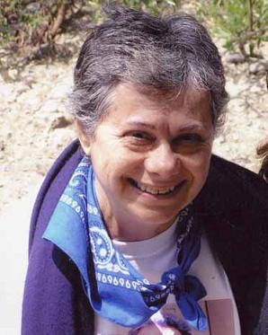

سایت زنستان: سه سال پیش از طرف نوشین پایدارـ دوست و همکلاسی خوبم در ایام دانشجویی در UCLA ـ به خانه ایشان برای دیدار با پروین پایدار دعوت شدم. پروین تازه از افغانستان بازگشته بود و با شوق و علاقه از نیازهای زنان افغانی و برنامههای تحقیق و کمکرسانی سازمان ملل در این کشور صحبت میکرد. پروین و خانوادۀ نازنینشان آن روز با مهربانی و صمیمیت میزبان ما بودند. باوجود ناخوشی پروین، آن روز با صحبتهای داغ و امید به فرداهای بهتر برای زنان ایرانی و افغانی سپری شد.
البته آشنایی من با خانم پروین پایدار سالها پیش و از طریق کتاب ایشان «زنان و پروسه سیاسی در قرن بیستم در ایران» (چاپ کمبریج ـ 1995) بود که مرجع اصلی من در تز فوق لیسانس در جامعه شناسی قرار گرفت (1998). من و بسیاری از دانشجویان جنبش زنان ایران از نوشتهها و تحقیقات پروین بسیار آموختیم.

از جمله مشخصات بارز کار تحقیقی پروین، نگاه تازه و بررسی نو در تاریخ جنبش زنان ایران از نقطه نظرهایی است که قبلا بر محققان پوشیده بود. پروین در تحقیقات میدانی خویش نیز قابلیت خارقالعادهای برای شنیدن و از آن مهمتر و البته سختتر، گوش فرادادن به زنان مختلف با دیدگاههای مخالف داشت. همین قابلیت بود که باعث شد او از اولین کسانی باشد که به درستی فعالان حقوق زنان (در دهه 1995) را برخاسته از طیفهای متفاوت از جمله مذهبیون و زنان وصل به قدرت سیاسی تشخیص دهد.
نکته دیگری که مرا مجذوب شخصیت پروین و همچنین دوست و همکارشان خانم افسانه نجمآبادی کرد و میکند، تشویق اینان و حمایت از محققان جوان و نوپاست. یکی از ویژگیهای فرهنگ ایران احترام به بزرگان و پیش کسوتان و خصوصا نقد نکردن استادان به بهانه احترام به آنهاست. پروین و افسانه اما، با فروتنی همیشه به جوانترها گوش دادهاند، تشویق کردهاند و آموختههایشان را در دسترس دانشجویان قرار دادهاند. باشد که استادان ما، مانند پروین گفتگو و نقد را بر نطق و خطابه ترجیح داده و آموزش را جادهای دوطرفه ببینند.
یادش گرامی باد.
18 اکتبر 2007